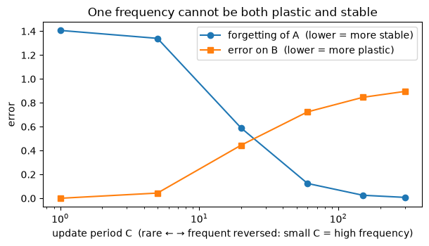

The question: what do you get when you order every memory in a model by how often it updates?
Second module of the Nested Learning track. Prerequisites: foundations M1–M7, and NL-1. Runs on CPU in seconds; PyTorch throughout.
By the end of this module you should be able to:
Define a level by update frequency (Def. 2) and sort a model’s changing parts into an ordered ladder — including the dependency tiebreak and same-level parallel components.
Count the levels in the setups we already built: plain SGD (1), +momentum (2), linear attention (2), linear attention + momentum (3).
Explain why a standard Transformer is just the two frequency extremes — attention at \(\infty\), the MLP at \(0\) — with the middle of the spectrum empty.
See the stability–plasticity tradeoff a single update frequency forces, and why that motivates a continuum of timescales.
Read the Continuum Memory System (CMS) as a chain of MLP memories at \(k\) different frequencies (Eq. 70–71), and say why filling the spectrum helps continual learning.
Grounding: Nested Learning (Behrouz, Razaviyayn, Zhong & Mirrokni, Dec 2025 — the same group as Titans, Miras and Atlas, a year on from Titans; levels, the \(\succ\) ordering and the CMS are all its own coinages) §3.2 (Def. 2, levels & the \(\succ\) ordering), §7.1 (CMS, Eq. 70–71). The \(\infty\)/\(0\) reading of a Transformer is stated in §1 and cashed out in §8 (attention at \(\infty\)) and §7.1 (the MLP at \(0\)) — see §2’s note.
Prerequisite math — orthogonality and effective rank (why interference happens) are in the linear-algebra primer.
Why this module exists — we have a pile of memories, now order them
NL-1 closed on a provocation: it put a real optimizer inside the memory, and M6 had already found a memory inside the optimizer. Between them there is no privileged number of learning loops in a model — so stop assuming and start counting.
Look back at what the foundations actually built. Every module added a thing that changes over time:
the in-context memory\(\mathcal M_t\) that rewrites itself every token (M1–M4, and NL-1’s test-time learner),
the slow weights / projections\(W_\bullet\) that move once per training step (M2),
the momentum buffer\(\mathbf m_t\) that compresses the gradient stream (M6).
Classic deep learning files these under two headings — “architecture” and “optimizer” — as if they were different kinds of object. M6 already dissolved that split (the optimizer is a memory too). So what actually distinguishes these pieces? Only one thing: how often each updates. Sort them by update rate and the model’s hidden structure falls out as a clean ladder — that ordering is Nested Learning’s central object, and everything else (ICL, the Transformer’s limits, CMS, HOPE) is a consequence.
1. What a level is — update frequency (Def. 2)
Set one update over one data point as the unit of time. A component’s frequency\(f_A\) is how many times it updates per unit (NL Def. 2 defines exactly this: “its number of updates per unit of time”). Then order components with \(\succ\):
\[A\succ B\quad\text{("}A\text{ is faster")}\iff f_A>f_B\quad\textbf{or}\quad\big(f_A=f_B\ \text{and computing }B\text{ needs }A\big).\]
The second clause is a dependency tiebreak: two things that update equally often but where one is computed from the other are still on different levels. Two things that update equally often and don’t depend on each other sit on the same level, in parallel. Then: same frequency ⇒ same level; higher level ⇒ lower frequency. Level 1 is the fastest-changing; the top level is the slowest (“pre-training”).
The demo implements exactly this \(\succ\) ordering and runs it on the setups we built.
# Faithful Def 2: A≻B if f_A > f_B, OR (f_A == f_B and B depends on A).# level(X) = 1 + max(level(Y) for every Y faster than X); equal-freq & independent → same level.def assign_levels(components): # name -> (freq, set of deps) names =list(components)def faster(a, b): # is a ≻ b ? fa, da = components[a] fb, db = components[b]return fa > fb or (fa == fb and a in db) # b depends on a → a is faster level = {}for _ inrange(len(names)): # iterate to a fixed pointfor x in names: level[x] =1+max([level.get(y, 0) for y in names if faster(y, x)] or [0])return leveldef show(title, comps): lv = assign_levels(comps) nlev =max(lv.values())print(f"{title} → {nlev} level(s)")for L inrange(1, nlev +1): members = [n for n in comps if lv[n] == L] tag =" (parallel — same level)"iflen(members) >1else""print(f" level {L} (freq {comps[members[0]][0]}): {', '.join(members)}{tag}")print()T, S ="per-token", "per-step"show("A: MLP + plain SGD", {"W": (S, set())})show("B: MLP + SGD-momentum", {"momentum m": (S, set()), "W": (S, {"momentum m"})})show("C: linear attention + SGD", {"in-context memory M_t": (T, set()), "projections W_qkv": (S, set())})show("D: linear attention + momentum", {"in-context memory M_t": (T, set()), "momentum m": (S, set()), "projections W_qkv": (S, {"momentum m"})},)show("E: AdamW — two moments are PARALLEL on one level", {"1st moment m": (S, set()), "2nd moment v": (S, set()), "W": (S, {"1st moment m", "2nd moment v"})},)
A: MLP + plain SGD → 1 level(s)
level 1 (freq per-step): W
B: MLP + SGD-momentum → 2 level(s)
level 1 (freq per-step): momentum m
level 2 (freq per-step): W
C: linear attention + SGD → 2 level(s)
level 1 (freq per-token): in-context memory M_t
level 2 (freq per-step): projections W_qkv
D: linear attention + momentum → 3 level(s)
level 1 (freq per-token): in-context memory M_t
level 2 (freq per-step): momentum m
level 3 (freq per-step): projections W_qkv
E: AdamW — two moments are PARALLEL on one level → 2 level(s)
level 1 (freq per-step): 1st moment m, 2nd moment v (parallel — same level)
level 2 (freq per-step): W
Read the counts: plain SGD is 1 level; momentum makes it 2 (the optimizer added a level, not the architecture — B); linear attention also makes 2, but a different one — the per-token in-context memory is genuinely faster than the per-step projections (C); stack both and you get 3 (D). And AdamW shows the subtlety: its first and second moments update at the same rate and don’t depend on each other, so they sit side by side on one level (E). Ordinary setups are already multi-level — NL just makes the ladder visible.
2. A Transformer is the two frequency extremes
Apply the ruler to a standard Transformer block and you get the paper’s punchline:
Attention keeps no parameters that update within a sequence; it is a non-parametric solution re-solved from scratch at every token over all the past. Its effective memory state changes every token → frequency \(\infty\).
The MLP block is frozen during the sequence — the same map is applied to every token; it only moves during pre-training → frequency \(0\).
So a Transformer isn’t “attention + MLP, two species.” It is one memory at the highest possible update frequency next to one at the lowest, with nothing in between. The demo shows both facts directly: feed the same token at two positions and watch the MLP give an identical answer (frozen) while attention gives different answers (re-solved against a growing context).
NoteWhere the paper actually says this — not where it says it will
NL §1 makes the claim in one sentence: “Later, in Section 6, however, we show that in-context learning provides an extreme case of this design and in fact, Transformer architectures are based on two extreme frequencies of update: i.e., \(\infty\) and \(0\) for attention and MLP blocks, respectively.”
Follow that pointer and you will not find it. §6 (Takeaways and Revisiting Common Terms) never mentions either frequency; the forward reference is broken. The two halves are delivered separately and elsewhere — attention at \(\infty\) in §8 (“perfect memories … with frequency update of infinity as they are non-parametric solutions”), the MLP at \(0\) in §7.1 (“The conventional Transformer block … where \(k=1\) and frequency of update is zero”). We cite those rather than the promise.
import numpy as np, torchtorch.manual_seed(1)d, T =8, 12Wmlp = torch.randn(d, d) / np.sqrt(d) # frozen during the sequenceseq = torch.randn(T, d)tok = torch.randn(d)seq[3] = tokseq[9] = tok # SAME token at positions 3 and 9def mlp(x):return torch.relu(x @ Wmlp.T)def causal_attn(seq, i): # non-parametric: recomputed over tokens 0..i q = seq[i] K = seq[: i +1] w = torch.softmax(K @ q / np.sqrt(d), 0)return w @ Kprint(f"MLP(tok) at pos 3 == at pos 9 : {torch.allclose(mlp(seq[3]), mlp(seq[9]))} → frozen map, frequency 0")print(f"attention(tok) pos 3 vs pos 9 : differ by {torch.norm(causal_attn(seq, 3) - causal_attn(seq, 9)):.3f}"f" → state re-solved every token, frequency ∞")print("A Transformer block = {freq ∞ (attention)} + {freq 0 (MLP)}, with the middle of the spectrum empty.")
MLP(tok) at pos 3 == at pos 9 : True → frozen map, frequency 0
attention(tok) pos 3 vs pos 9 : differ by 0.094 → state re-solved every token, frequency ∞
A Transformer block = {freq ∞ (attention)} + {freq 0 (MLP)}, with the middle of the spectrum empty.
3. Why one frequency is not enough — the stability–plasticity tradeoff
Before filling that empty middle, see why you would want to. A single memory updated at one frequency faces an unavoidable tradeoff. Train it on task A, then on task B (same inputs, different target maps), and sweep its update period \(C\) (how many steps between updates):
update often (small \(C\)) → it tracks B perfectly but overwrites A (catastrophic forgetting);
update rarely (large \(C\)) → it retains A but barely learns B (no plasticity).
There is no single \(C\) that is good at both — plasticity and stability pull in opposite directions along the frequency axis. That is the whole argument for a spectrum of frequencies.
import matplotlib.pyplot as pltimport numpy as npimport torchd =16g = torch.Generator().manual_seed(3)WA = torch.randn(d, d, generator=g) / np.sqrt(d)WB = torch.randn(d, d, generator=g) / np.sqrt(d)def evalW(M, Wt, n=300): e =0.0 ge = torch.Generator().manual_seed(999)for _ inrange(n): x = torch.randn(d, generator=ge) x /= x.norm() e += (M @ x - Wt @ x).norm().item()return e / ndef single(C, lr=1.0, steps=300, seed=5): M = torch.zeros(d, d) acc = torch.zeros(d, d) cnt =0 gen = torch.Generator().manual_seed(seed) step =0 a0 =Nonefor Wt in (WA, WB):for _ inrange(steps): x = torch.randn(d, generator=gen) x /= x.norm() acc += torch.outer(M @ x - Wt @ x, x) cnt +=1if (step +1) % C ==0: # chunk-AVERAGED gradient step (stable form of Eq.71) M = M - lr * acc / cnt acc = torch.zeros(d, d) cnt =0 step +=1if Wt is WA: a0 = evalW(M, WA) # err on A right after learning Areturn a0, evalW(M, WA), evalW(M, WB) # (errA_afterA, errA_afterB, errB)Cs = [1, 5, 20, 60, 150, 300]forget, plastic = [], []print(f"{'C (period)':>10}{'errA (forgetting)':>20}{'errB (plasticity)':>20}")for C in Cs: a0, a1, b = single(C) forget.append(a1 - a0) plastic.append(b)print(f"{C:>10}{a1 - a0:>20.3f}{b:>20.3f}")print("\nsmall C: plastic but forgets (errA↑) · large C: stable but rigid (errB↑) · no single C wins both")plt.figure(figsize=(6.2, 3.6))plt.semilogx(Cs, forget, "-o", label="forgetting of A (lower = more stable)")plt.semilogx(Cs, plastic, "-s", label="error on B (lower = more plastic)")plt.xlabel("update period C (rare ← → frequent reversed: small C = high frequency)")plt.ylabel("error")plt.title("One frequency cannot be both plastic and stable")plt.legend()plt.tight_layout()plt.show()
C (period) errA (forgetting) errB (plasticity)
1 1.406 0.000
5 1.340 0.044
20 0.589 0.445
60 0.124 0.724
150 0.025 0.846
300 0.008 0.895
small C: plastic but forgets (errA↑) · large C: stable but rigid (errB↑) · no single C wins both

4. The Continuum Memory System — fill the spectrum (Eq. 70–71)
The fix writes itself: don’t pick one frequency — use many. The Continuum Memory System is a chain of MLP memories at \(k\) different frequencies \(f_1,\dots,f_k\) (NL Eq. 70):
where block \(\ell\) carries a chunk size \(C^{(\ell)}:=\max_i C^{(i)}/f_\ell\) — the higher its frequency, the shorter its chunk — and updates only at chunk boundaries, accumulating over the chunk (Eq. 71):
Here \(f(\cdot)\) is, in the paper’s words, “the error component of an arbitrary optimizer” — read \(f=\nabla\mathcal L\) and you have the plain gradient-descent instance it names, which is what the demo runs. A standard Transformer is the degenerate case \(k=1\) with frequency \(0\) — one block, never updated in-sequence. CMS keeps the fast end and the slow end and the middle. The demo builds the chain and instruments the cadence: count how often each level updates and how far each moves over a stream.
WarningWhich end of the chain is the fast one? The paper indexes it both ways.
§3.2’s convention is explicit — “the higher the level is, the lower its frequency” — so level 1 is the fastest. That is the convention §1 above uses.
§7.1 indexes the CMS chain the other way. Two of its own statements force it: the chunk size \(C^{(\ell)}:=\max_i C^{(i)}/f_\ell\) makes a larger\(f_\ell\) a shorter chunk, and Eq. 73 then says “\(\mathcal C^{(1)}\) is the context length of the MLP block in the lowest frequency level” — pinning \(f_1\) as the slowest. So in Eq. 70 the input meets the slowest block first and the fastest last. §7.1’s continual-learning argument needs that reading too: knowledge forgotten by \(\text{MLP}^{(f_s)}\) survives in \(\text{MLP}^{(f_{s'})}\) “where \(s'<s\)”, which only means “in the slower blocks” if \(f_1\) is the slowest.
The paper never reconciles the two, so we write \(f_1,\dots,f_k\) without asserting an order — nothing in this module turns on it. Just don’t carry a “\(f_1>\dots>f_k\)” into §7.1: it is the reverse of what §7.1’s own equations say.
import numpy as npimport torchtorch.manual_seed(2)T, d =128, 8periods = [1, 8, 64] # C for fast → slow levelsM = [torch.zeros(d, d) for _ in periods]acc = [torch.zeros(d, d) for _ in periods]cnt = [0] *len(periods)updates = [0] *len(periods)movement = [0.0] *len(periods)gen = torch.Generator().manual_seed(7)Wstar = torch.randn(d, d) / np.sqrt(d)for step inrange(T): x = torch.randn(d, generator=gen) x /= x.norm() err =sum(Ml @ x for Ml in M) - Wstar @ x # head-wise CMS: output = Σ levels (Eq.74)for l, Cl inenumerate(periods): acc[l] += torch.outer(err, x) cnt[l] +=1if (step +1) % Cl ==0: # chunk boundary → update this level upd = acc[l] / cnt[l] M[l] = M[l] -0.3* upd movement[l] +=0.3* upd.norm().item() acc[l] = torch.zeros(d, d) cnt[l] =0 updates[l] +=1for l, Cl inenumerate(periods):print(f"level {l} (period C={Cl:>2}): {updates[l]:>3} updates / {T} steps, cumulative |Δθ| = {movement[l]:.2f}")print("\nfast level churns every step (plastic, short-term store); slow level barely moves (persistent store).")
Why this helps continual learning (§7.1). Treat each block as a knowledge store. When you update a fast block, it can forget — but the forgotten knowledge still lives in the slower blocks, which update rarely. And because the blocks’ initial states are tied through backpropagation, a slow block can circle that knowledge back into a fast block later — “a loop through time dimension, and so hardly forgetting important knowledge”, in the paper’s words. The fast end gives plasticity; the slow end gives persistence; together they beat any single point on §3’s tradeoff curve.
Honest scope of the demo. The cells above show the two ingredients — the frequency ladder (§1, §4) and the stability–plasticity tradeoff it spans (§3) — with linear memories, where they are crisp. The full continual-learning win needs the nonlinear, nested CMS (MLP blocks, per-context re-initialization, the backprop circle-back); a linear head-wise sum can’t show it, because the fast level dominates the readout and re-forgets. That nonlinear assembly is exactly what NL-3 puts together. We flag this rather than overclaim it.
5. A second payoff — levels are a new axis of computational depth
Stacking more layers does not reliably let a model execute more complex algorithms — a Transformer’s program is fixed once trained, and its computational depth is bounded (§1, §8, grounded in the state-tracking / circuit-complexity literature). NL’s route to more depth is more levels, not more layers: each added level is extra computation within the forward pass (higher-order in-context learning, loops, self-modification).
A useful caveat to keep honest: “more computational depth” can be bought in two different places — in token space (chain-of-thought / reasoning models spend more forward passes across a longer generated sequence) or in latent / within-pass depth (loops, recurrent state, NL’s nested levels). NL sells the latent-depth route; it does not discuss chain-of-thought. They are sibling ways to “run a longer program,” not the same claim — worth not conflating.
6. The ladder, in one breath
A model is a stack of memories sorted by update speed. Plain SGD on an MLP is one level; momentum makes the optimizer contribute a second; linear attention makes the architecture contribute a fast in-context level; a Transformer is just the two frequency extremes (\(\infty\) and \(0\)) with the middle empty. A single frequency can’t be both plastic and stable, so you fill the middle with a continuum of MLP memories (CMS) — fast levels adapt and forget, slow levels persist, and the loop between them resists catastrophic forgetting.
Two consequences worth naming: in-context learning is demystified — it is simply “having more than one level,” a fast level adapting on top of a well-trained slow one; and computational depth gets a new knob (levels, not layers). What remains is to stack the self-modifying memory (M5’s SRWM, NL-1’s Titans) onto this continuum — a fast level that rewrites its own update rule, sitting in a spectrum of slower stores. That assembly is HOPE, and it is NL-3.
Code walkthrough — where this lives
levels.py — the level/frequency bookkeeping, made explicit: a LevelSpec carries each level’s update period, a LevelClock decides when each one fires, and levels_in_frequency_order() is the \(\succ\) ordering turned into code.
cms.py — the chain of Eq. 70: one residual MLP block per level, applied in sequence. Worth knowing what is not here — the chunked per-level updates of Eq. 71. cms.py only stacks the blocks; the accumulate-over-\(C^{(\ell)}\)-tokens-then-step logic lives inside the forward pass in hope/block.py, which NL-3 walks through.
the from-scratch HOPE — its stack of ContinuumMemoryBlocks is a genuine three-frequency CMS (cms_tiers sets update periods 1, 4 and 16, each with its own optimizer). Note it is attention-free: there the CMS chain is the feed-forward stack rather than a replacement for a Transformer’s MLP.
The two repos are independent community reimplementations, not the authors’ code.
Exit check
1. How is a “level” defined, and what are the two ways two components can share or split a level? A level is a set of components with the same update frequency\(f\) (updates per data point, NL Def. 2), ordered so higher level = lower frequency (§1). Two components split into different levels either because their frequencies differ, or because they update equally often but one is computed from the other (the dependency tiebreak: \(A\succ B\) if \(f_A=f_B\) and \(B\) needs \(A\)). Two components that update equally often and are independent share one level, in parallel — AdamW’s first and second moments are the canonical example (§1, demo E).
2. Why is a Transformer block “two frequency extremes,” and which is which? Attention keeps no in-sequence parameters — it is re-solved from scratch every token over the whole past, so its state changes at frequency \(\infty\); the MLP is frozen during the sequence (same map for every token, moves only in pre-training), so frequency \(0\) (§2). The demo confirms it: the MLP returns an identical output for the same token at two positions, while attention returns different outputs. A Transformer is the two endpoints of the frequency spectrum with the middle empty.
3. What tradeoff makes a single update frequency insufficient, and how does CMS resolve it? The stability–plasticity tradeoff (§3): a memory updated often is plastic but forgets old tasks (catastrophic forgetting); updated rarely it retains but cannot learn new ones — and no single update period \(C\) is good at both. CMS (Eq. 70–71) resolves it by using a chain of MLP memories at \(k\) different frequencies (§4): fast levels supply plasticity, slow levels supply persistence, and because forgotten knowledge survives in slower blocks (and can be circled back via backprop), the system resists forgetting. A Transformer is the degenerate \(k=1,\ f=0\) case.
4. In what sense do “levels” add computational depth, and what is the honest boundary of that claim? Adding levels (not layers) adds computation within a forward pass — higher-order in-context learning, loops, self-modification — which is NL’s route to executing more complex algorithms (§5). The honest boundary: this is the latent / within-pass depth axis; it is distinct from the token-space depth that chain-of-thought / reasoning models buy by generating more tokens. NL advocates the former and does not discuss the latter; they are siblings, not the same claim.
Next → NL-3, HOPE. We finally assemble everything: take the self-modifying sequence memory (M5’s SRWM, NL-1’s Titans, optimized with M6’s DGD) and drop it into this continuum of MLP memories. The fast level rewrites its own update rule while a spectrum of slower levels holds persistent knowledge — one continual-learning architecture, every piece of the course in its place.